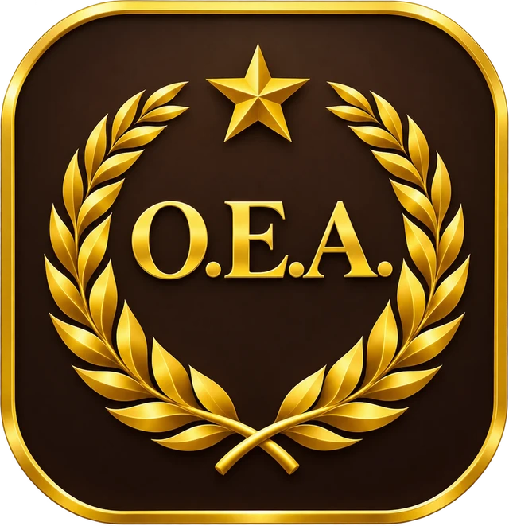

DE ANGOLA
Em construção

Em construção
O futuro da economia angolana está a chegar
Estamos a construir uma nova plataforma digital para os economistas de Angola — mais moderna, mais próxima e preparada para o futuro. Volte em breve.
Construção da plataforma
0%
- Identidade de marca
- Portal institucional
- Área do membro
- Notícias e publicações
- Eventos e formação
- Inscrições online